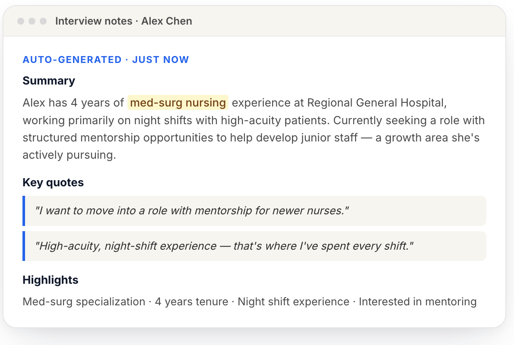

AI interview notes
What the note taker records during a JobFairX video interview, what it gives you afterwards, and what it never does.
What you get
The JobFairX note taker listens to your video interviews and writes the notes, so you can keep your attention on the candidate.
After a video interview ends, you get three things for that candidate:
- An overview of who the candidate is and what they are looking for.
- A summary of what they said, organized so you can scan it in a minute.
- Next steps drawn from the conversation, such as a follow-up interview or a document to collect.

The notes are included with every event. There is nothing to buy and nothing to install.
Reading the notes
The notes are written for a hiring manager who was not in the room. The summary comes first and reads in under a minute: experience, the setting the candidate works in now, and what they are looking for next. Below it, the candidate's own words are quoted where they matter, for example why they are leaving or what shift pattern they want, so you are not relying on a paraphrase. A line of highlights at the end picks out the points your team will compare across candidates, such as years in the role or a licence held.
Nothing in the notes is a verdict. If the summary says a candidate wants night shifts and your role is days, that is for you to weigh, in the rating you give.
Which interviews are covered
The note taker works on video interviews held on JobFairX, including panel interviews. It does not cover phone interviews, in-person interviews, or video interviews on your own meeting link, because it is built into the JobFairX interview room.
The candidate agrees first
Candidates are told that the interview will be recorded for notes and agree to it before the interview starts.
Candidates have already agreed before the interview starts, but a sentence at the start of the interview, such as “JobFairX takes notes for us so I can focus on you”, puts people at ease and explains why nobody is typing.
Where to find the notes
After the interview, the AI notes appear in two places:
- In the event lobby, in the Interviewed room, under Notes for each candidate.
- In the post-event report, once the event is over.
The candidate never sees them.
What it never does
The note taker writes down what was said. It does not score candidates, rank them, or suggest who to advance. Those decisions stay with your team, through the Yes, Maybe and No rating each interviewer gives after the interview.
Several states now regulate automated tools that influence hiring decisions. JobFairX keeps the decision with you: the notes are evidence, and the rating is yours.
Getting better notes
- Use your screening questions in the order you set them, so the notes follow the shape you expect.
- Let the candidate finish. Clean turns make cleaner notes.
- Say names and job titles out loud when they come up, rather than only showing them on screen.
- Use a headset or a quiet room. The notes are only as good as the audio.
Using the notes after the event
- Compare candidates for the same job by reading the highlights line on each before you look at the ratings.
- Use the next steps to drive your follow-ups: schedule a follow-up interview from the candidate's row, or send the document request the candidate was told to expect.
- When a colleague who was not in the interview asks what the candidate said, point them to the candidate's notes in the post-event report rather than retelling it.
- Keep your own notes short during the conversation. Write down your reaction and anything the recording cannot capture, such as how the candidate handled a hard question.
What to do next
Where to go from here.
- Panel interviews Bringing more than one interviewer into the same video interview.
- Running your event day What the lobby shows before and during an event, and how to run an interview.
- Event performance summary Reviewing how an event did and exporting the people who signed up.
- Choosing your interview slot length 15 or 30 minute interview slots, and how the choice shapes your event day.
- Setting up automations Messages that send themselves as candidates move through your process.
Still need help?
If something on this page does not match what you see in your account, contact JobFairX support and include your event name and date.